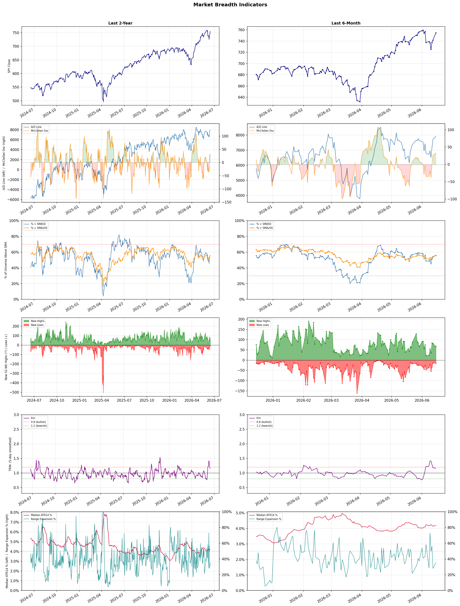

A daily research map of market breadth, industry rotation, and technical setups
| Item | Read |
|---|---|
| Regime | Selective Risk-On |
| Risk posture | Selective |
| Universe | 1,343 stocks tracked · 67 new 52-week highs · 30 active swing setups |
| Breadth | 55.5% of tracked stocks are above SMA50 — neutral range, new highs exceed new lows (67 vs 15) |
| Leadership | Computer Hardware, Semiconductor Equipment & Materials, and Electronic Components |
| Weakest groups | Agricultural Inputs, Financial Data & Stock Exchanges, and Oil & Gas E&P |
Use this report to prioritize research and chart review; validate entries, stops, liquidity, earnings, and risk before acting.
| Item | Read |
|---|---|
| Primary read | Selective Risk-On regime with Selective risk posture. |
| Research queue | SNDK, DELL, WDC, QBTS, UMAC |
| Leadership focus | Computer Hardware, Semiconductor Equipment & Materials, and Electronic Components |
| Caution list | Agricultural Inputs, Financial Data & Stock Exchanges, and Oil & Gas E&P |
| Review prompt | Check extension risk, chart location, fundamentals, valuation, and earnings before using any research row. |
| Item | Read |
|---|---|
| Primary read | 0 active risk warnings; use screen output as watchlist input only. |
| Bullish screens | DELL, SNDK, STX, AMAT, AMKR |
| Bearish screens | none |
| Alerts / levels | Automated trigger, stop, ATR, liquidity, reward/risk, and event-risk levels are pending future enrichment. |
| Review prompt | Open the linked chart, define trigger and invalidation, then check liquidity and event risk independently. |
Risk Posture: Selective — screen backdrop supports selective research in leading industries
Metric context: McClellan below -50 = elevated selling pressure; below -100 = washout territory. Range Expansion = share of stocks with daily range above their 20-day average. Signal Density = share of tracked names appearing in signal screens.
| Breadth Date | % > SMA50 | % > SMA200 | New Highs | New Lows | McClellan | Median Range | Avg Range | Median ATR14 | Range Expansion | Signal Density |
|---|---|---|---|---|---|---|---|---|---|---|
| 2026-06-15 | 55.5% | 56.0% | 67 | 15 | 32.5 | 3.4% | 3.9% | 4.2% | 35.2% | 2.4% |

Prior comparison date: June 12, 2026
| Metric | Prior | Current | Change |
|---|---|---|---|
| Regime | Selective Risk-On | Selective Risk-On | unchanged |
| Risk Posture | Selective | Selective | unchanged |
| % > SMA50 | 55.6% | 55.5% | -0.1 pts |
| % > SMA200 | 56.6% | 56.0% | -0.6 pts |
| New Highs | 125 | 67 | -58 |
| New Lows | 17 | 15 | +2 |
Top-10 industries entering: Airlines and Diagnostics & Research. Top-10 industries leaving: Resorts & Casinos and Trucking. New multi-signal long setups: ALGM, AMD, AMKR, BNS, COHU, DAL, DELL, FDX, GTX, IBKR. New multi-signal short setups: none.
| Status | Tickers | Read |
|---|---|---|
| Added | ALGM, AMD, AMKR, BNS, COHU, DAL, DELL, FDX | New technical screen matches vs prior report. |
| Removed | ACMR, APLE, ASB, BRX, BTSG, CFFN, CSX, CVS | No longer present in today's technical screen matches. |
| Still Active | AMAT, C, DRH, EXTR, HLIT, HNGE, PEB, SNDK | Appeared in both current and prior reports. |
| Promoted | EXTR, HLIT | Model Screen Score improved by at least 15 points. |
| Downgraded | DRH, PEB | Model Screen Score declined by at least 15 points. |
| Direction | Industry | ETF | Prior Rank | Current Rank | Days | Rank Change |
|---|---|---|---|---|---|---|
| Rose | Footwear & Accessories | N/A | 92 | 14 | 28 | +78 |
| Rose | Airlines | N/A | 82 | 6 | 42 | +76 |
| Rose | Diagnostics & Research | N/A | 85 | 10 | 42 | +75 |
| Rose | Apparel Retail | XRT | 95 | 30 | 28 | +65 |
| Rose | Copper | COPX | 83 | 19 | 42 | +64 |
Bull: The Footwear & Accessories industry is experiencing rising relative strength due to favorable industry trends highlighted in recent headlines, such as the positive outlook for stocks in the sector, including notable mentions like Crocs, which saw a significant 6.7% jump amid a broader sector rally. Additionally, the emphasis on growth potential in both footwear and retail apparel stocks suggests a robust consumer demand and a shift towards lifestyle-oriented products, further driving investor confidence and positioning the industry for its next growth phase.
Bear: While the recent headlines suggest a positive outlook for the Footwear & Accessories industry, it's crucial to consider that such sector-wide rallies can often be driven by short-term sentiment rather than sustainable growth. Factors like rising inflation, supply chain disruptions, and changing consumer spending habits may undermine the industry's performance, particularly as discretionary spending tightens. Moreover, companies like Deckers Outdoor and Lululemon are showing signs of underperformance relative to broader indices, indicating potential vulnerabilities that could dampen the overall growth narrative.
Verdict: The Footwear & Accessories industry is experiencing a rise in relative strength due to strong consumer demand for lifestyle-oriented products and positive stock performance, exemplified by Crocs' significant gains. However, key risks include potential headwinds from rising inflation and supply chain disruptions, which could impact discretionary spending and undermine the sector's growth trajectory. Investors should remain cautious and monitor economic indicators that could affect consumer spending habits moving forward.
Sources: Google News
Bull: The airline industry is experiencing a rising relative strength primarily due to a rebound in travel demand and improving operational efficiencies, as indicated by positive headlines such as "Airline Stocks To Watch" and "AIR CHINA Leads Gains." Despite recent profit warnings affecting stocks like Delta, the overall trend suggests that airlines are capitalizing on increased passenger volumes and robust international travel, positioning themselves favorably compared to other sectors. Additionally, the mention of "Best Airline Stocks to Buy Now" highlights investor confidence in the sector's recovery and growth potential.
Bear: While the airline industry may currently exhibit a rising relative strength, this trend is deceptive given the recent sector-wide profit warnings, particularly from major players like Delta Air Lines, which indicate underlying financial instability. Furthermore, the rebound in travel demand could be short-lived, as economic uncertainties, rising fuel costs, and potential geopolitical tensions may dampen consumer spending on travel, undermining the optimistic outlook presented by bullish analysts. Thus, the current gains may not reflect sustainable growth but rather a temporary bounce that could reverse as these headwinds materialize.
Verdict: The airline industry's rising relative strength is primarily driven by a significant rebound in travel demand and improved operational efficiencies, which have led to increased passenger volumes and investor confidence. However, key risks persist, particularly from recent profit warnings and potential economic headwinds such as rising fuel costs and geopolitical tensions, which could undermine this recovery and lead to a reversal in gains. Investors should remain cautious and monitor these external factors closely before making substantial commitments to airline stocks.
Sources: Google News
Bull: The Diagnostics & Research sector is experiencing a rising relative strength primarily due to increasing investor confidence in healthcare stocks, as highlighted by recent headlines discussing sector-wide rallies and recommendations for top healthcare stocks. The integration of AI in healthcare, as noted in U.S. News, is driving innovation and efficiency in diagnostics, further enhancing growth prospects for companies like Quest Diagnostics and Adaptive Biotechnologies. Additionally, the momentum observed in stocks like Waters suggests a broader market recognition of the value and potential of diagnostics and research firms, positioning them favorably in the current economic environment.
Bear: While the rising relative strength in the Diagnostics & Research sector may seem promising, it is crucial to consider the potential overvaluation of these stocks driven by short-term investor enthusiasm rather than fundamental growth. The integration of AI, while innovative, also brings significant competition and regulatory challenges that could hinder profitability and market share for established players like Quest Diagnostics and Adaptive Biotechnologies. Furthermore, the current economic environment, including rising interest rates and inflationary pressures, may lead to reduced healthcare spending, undermining the growth prospects touted by bullish analysts.
Verdict: The Diagnostics & Research sector's rising relative strength is fundamentally driven by increased investor confidence in healthcare stocks, fueled by advancements in AI technology that enhance operational efficiency and innovation within the industry. However, investors should remain cautious of potential overvaluation and the risks posed by rising interest rates and inflation, which could dampen healthcare spending and affect profitability for established companies. It is advisable to closely monitor economic indicators and company fundamentals to assess the sustainability of this upward momentum.
Sources: Google News
Bull: The Apparel Retail sector is experiencing rising relative strength due to a combination of robust job growth and a potential shift in consumer spending patterns amid sticky inflation, as highlighted by the headline questioning the viability of retail ETFs in such an environment. Additionally, the positive momentum seen in stocks like Burlington Stores and Boot Barn suggests a renewed investor confidence in the sector's growth narrative, indicating that consumers are willing to spend on discretionary items. This trend is further supported by the overall bullish sentiment in the market, as reflected in the rising equity futures and ETFs amid geopolitical stability, such as the US-Iran ceasefire.
Bear: While the rising relative strength in the Apparel Retail sector may suggest positive momentum, it is crucial to consider the underlying challenges posed by persistent inflation and changing consumer behavior. Many consumers are likely to prioritize essential spending over discretionary items, which could dampen demand for apparel, particularly if inflation continues to erode purchasing power. Additionally, the recent geopolitical stability may provide a temporary boost, but it does not address the long-term structural issues facing the retail sector, such as increased competition from e-commerce and shifting consumer preferences, which could undermine the growth narrative for stocks like Burlington Stores and Boot Barn.
Verdict: The Apparel Retail sector's rising relative strength is primarily driven by robust job growth and a potential shift in consumer spending towards discretionary items, despite ongoing inflationary pressures. However, the key risk lies in the possibility that consumers may continue to prioritize essential spending, which could dampen demand for apparel and undermine the growth prospects for companies like Burlington Stores and Boot Barn. Investors should closely monitor consumer behavior trends and inflation developments to gauge the sustainability of this momentum.
Sources: Yahoo Finance, Google News
Bull: Copper is experiencing rising relative strength primarily due to its critical role in the transition to alternative energy and the ongoing AI boom, as highlighted in the headlines discussing the grid resilience boom and the competition between copper and precious metals. Additionally, the impressive 156% return of the copper ETF, coupled with a robust 9.7% yield, underscores strong investor confidence in copper's demand, particularly as industries increasingly pivot towards electrification and sustainable energy solutions.
Bear: While the bullish narrative around copper's role in the transition to alternative energy and AI is compelling, several headwinds could undermine this optimism. A potential global manufacturing slowdown could significantly reduce demand for copper, as it is heavily tied to industrial activity. Additionally, the impressive past performance of the copper ETF may not be sustainable, as high returns can attract increased supply and competition, which could lead to price corrections in the future.
Verdict: Copper's rising strength is fundamentally driven by its essential role in the transition to alternative energy and electrification, coupled with strong investor confidence reflected in the significant returns of copper ETFs. However, the key risk lies in the potential for a global manufacturing slowdown, which could dampen demand and lead to price corrections. Investors should closely monitor industrial activity indicators to gauge future demand trends for copper.
Sources: Yahoo Finance, Google News
| Direction | Industry | ETF | Prior Rank | Current Rank | Days | Rank Change |
|---|---|---|---|---|---|---|
| Fell | Uranium | URA | 11 | 84 | 35 | -73 |
| Fell | Oil & Gas Refining & Marketing | CRAK | 13 | 82 | 35 | -69 |
| Fell | Oil & Gas E&P | XOP | 17 | 86 | 28 | -69 |
| Fell | Oil & Gas Integrated | XLE | 8 | 76 | 28 | -68 |
| Fell | Engineering & Construction | N/A | 12 | 78 | 42 | -66 |
Bear: While the bullish analyst points to a resurgence in interest for nuclear energy, the falling relative strength of uranium suggests that investor sentiment is not aligning with this narrative. The reality is that uranium faces significant headwinds, including persistent regulatory challenges, public opposition to nuclear power, and the slow pace of new reactor construction, which could hinder its ability to capitalize on the purported demand from AI and geopolitical risks. Moreover, the competition from rapidly advancing renewable energy technologies and other sectors, such as lithium, may continue to overshadow uranium's potential, leading to a prolonged period of underperformance in the market.
Bull: The falling relative strength of uranium compared to other industries is likely driven by a combination of market sentiment and short-term volatility, as evidenced by headlines highlighting a broader resurgence in interest for nuclear energy due to geopolitical risks and the rising demand for electricity from AI data centers. While there is a bullish outlook for uranium driven by its potential role in meeting future energy demands, the current market may be reacting to competing narratives from other sectors, such as lithium and broader mining stocks, which are also gaining traction, as seen in the TradingView headline. This juxtaposition suggests that while the long-term fundamentals for uranium remain strong, short-term dynamics and investor sentiment are currently favoring other industries.
Verdict: The uranium industry's recent decline in relative strength appears to stem from a combination of short-term market sentiment favoring competing sectors, such as lithium and renewables, despite a long-term bullish outlook driven by increasing demand for nuclear energy. Key risks include ongoing regulatory challenges and public opposition to nuclear power, which could impede the industry's ability to capitalize on emerging opportunities. Investors should closely monitor these dynamics and consider diversifying into sectors with stronger immediate momentum while remaining aware of uranium's potential in the long run.
Sources: Yahoo Finance, Google News
Bear: While the recent high in the Oil Refiners ETF (CRAK) may seem promising, it is essential to recognize that this performance is largely driven by short-term price fluctuations rather than sustainable demand growth. The ongoing concerns over economic slowdowns and potential declines in oil demand, as highlighted in the headline "Oil to Slip on Demand Woes or Hold on Supply Risks?", indicate that the sector may face significant headwinds ahead, particularly if geopolitical tensions ease and supply stabilizes. This could lead to a sharp correction in oil prices, undermining the profitability of refiners and exposing them to greater volatility.
Bull: The Oil & Gas Refining & Marketing sector is experiencing a decline in relative strength primarily due to concerns over demand amidst potential economic slowdowns, as highlighted by the headline "Oil to Slip on Demand Woes or Hold on Supply Risks?" This uncertainty is compounded by geopolitical factors, with hopes of Middle East de-escalation potentially dampening immediate supply fears, leading to volatility in oil prices. However, the recent performance of the Oil Refiners ETF (CRAK) hitting a new 52-week high suggests that despite these challenges, there are underlying strengths and opportunities in the sector that could drive future growth.
Verdict: The Oil & Gas Refining & Marketing sector's recent performance, exemplified by the Oil Refiners ETF (CRAK) reaching a 52-week high, suggests that investors are currently optimistic about short-term price dynamics despite underlying demand concerns. However, the key risk lies in the potential for a sharp correction if economic slowdowns materialize and geopolitical tensions ease, leading to stabilized supply and diminished prices, which could significantly impact refiners' profitability. Investors should closely monitor economic indicators and geopolitical developments to gauge the sustainability of this sector's growth.
Sources: Yahoo Finance, Google News
Bear: While the bull analyst highlights geopolitical tensions and high crude prices as catalysts for potential gains in the Oil & Gas E&P sector, these factors also introduce significant risks that could undermine long-term stability. The volatility associated with elevated oil prices can lead to unpredictable market conditions, discouraging investment in the sector as companies may struggle to maintain profitability amidst fluctuating costs and regulatory pressures. Furthermore, the increasing focus on renewable energy and technological advancements in AI may accelerate the shift away from fossil fuels, potentially leaving traditional oil and gas investments vulnerable to declining demand in the coming years.
Bull: The Oil & Gas E&P sector is experiencing a relative strength decline due to heightened geopolitical tensions, as indicated by the "Hormuz Crisis" and the persistent crude oil prices above $100, which create uncertainty and volatility in the market. Additionally, while energy ETFs are positioned for gains, the focus on AI capital expenditures and other emerging technologies may be diverting investor attention and capital away from traditional energy investments, leading to a relative underperformance in the Oil & Gas E&P sector compared to other industries.
Verdict: The Oil & Gas E&P sector is likely experiencing a decline due to the dual pressures of geopolitical instability and high crude prices, which create market volatility and uncertainty. This environment may deter long-term investment as companies grapple with profitability amid fluctuating costs and increasing regulatory scrutiny. Additionally, the accelerating shift towards renewable energy and advancements in AI technologies pose a significant risk to traditional fossil fuel demand, warranting a cautious approach for investors considering exposure in this sector.
Sources: Yahoo Finance, Google News
Bear: While the bull analyst points to long-term potential in the oil and gas sector, the persistent decline in relative strength and the consistent negative sentiment reflected in multiple headlines suggest deeper, systemic issues that could hinder recovery. Factors such as increasing regulatory pressures, a global shift towards renewable energy, and potential demand destruction from economic slowdowns may overshadow any short-term optimism, leading to a prolonged period of underperformance for energy stocks. Furthermore, the rising U.S. equities and ETFs could indicate a broader market rotation away from energy, signaling that investors are losing confidence in the sector's ability to rebound effectively.
Bull: The Oil & Gas Integrated sector is likely experiencing a decline in relative strength due to recent negative sentiment reflected in multiple headlines about energy stocks falling, particularly in the afternoon trading sessions. This downturn may be driven by broader market trends favoring other sectors, as indicated by the rise in U.S. equities and exchange-traded funds, which suggests that investors are reallocating capital away from energy stocks. Additionally, the focus on long-term investment opportunities in oil and gas, as highlighted in articles discussing the best stocks for 2026, indicates that while the sector may be facing short-term challenges, there is a recognition of its potential for recovery and growth in the future.
Verdict: The Oil & Gas Integrated sector is likely experiencing a decline in relative strength due to a combination of negative market sentiment and a broader shift towards renewable energy, which is prompting investors to reallocate capital to more favorable sectors. The key risk from the bear case is the potential for systemic issues, such as increasing regulatory pressures and demand destruction from economic slowdowns, to hinder any recovery efforts in the oil and gas industry, suggesting that investors should proceed with caution and closely monitor these trends before making investment decisions.
Sources: Yahoo Finance, Google News
Bear: While the bull analyst points to potential recovery and strong performances from certain stocks, the broader trend of declining relative strength in the Engineering & Construction sector signals deeper issues that may not be easily resolved. The emphasis on technological advancements in AI and biotech suggests a shifting investment landscape where capital is increasingly diverted away from traditional sectors like construction, which may struggle to attract investment amid ongoing economic uncertainties and rising interest rates that could further dampen infrastructure spending. Additionally, the optimism surrounding a rebound may be overly reliant on speculative narratives rather than solid fundamentals, making the sector vulnerable to further declines.
Bull: The Engineering & Construction sector is currently experiencing a relative strength decline primarily due to broader economic uncertainties and shifting investor focus towards sectors benefiting from technological advancements, such as AI and biotech, as highlighted by the "AI Infrastructure Boom" article. Despite this, the sector shows potential for recovery, as indicated by recent headlines emphasizing a rebound in construction expectations and strong performances from specific stocks like Primoris Services, suggesting that underlying fundamentals may still support long-term growth.
Verdict: The Engineering & Construction sector's decline can be fundamentally attributed to heightened economic uncertainties and a shift in investor focus towards high-growth areas like AI and biotech, which are perceived as more resilient and innovative. The key risk from the bear case lies in the potential for ongoing capital flight from traditional sectors, exacerbated by rising interest rates that could stifle infrastructure spending and undermine any recovery efforts. Investors should closely monitor economic indicators and interest rate trends to gauge the sector's viability for long-term investment.
Sources: Google News
| Industry | Rank | ETF | 7d | 14d | 28d | 42d | Chg 42d | Size | 20D | 60D | Composite | Active Setups |
|---|---|---|---|---|---|---|---|---|---|---|---|---|
| Computer Hardware | 1 | XLK | 2 | 1 | 6 | 3 | +2 | 15 | 26.3% | 71.7% | 0.969 | 1 |
| Semiconductor Equipment & Materials | 2 | SOXX | 21 | 10 | 12 | 2 | 0 | 17 | 20.1% | 73.9% | 0.938 | 0 |
| Electronic Components | 3 | XLK | 3 | 3 | 7 | 5 | +2 | 10 | 15.3% | 70.9% | 0.934 | 0 |
| Semiconductors | 4 | SOXX | 4 | 2 | 1 | 1 | -3 | 38 | 18.0% | 108.7% | 0.932 | 1 |
| Healthcare Plans | 5 | IHF | 6 | 13 | 4 | 11 | +6 | 10 | 15.3% | 67.3% | 0.928 | 1 |
| Airlines | 6 | N/A | 27 | 16 | 75 | 82 | +76 | 8 | 24.8% | 35.5% | 0.882 | 1 |
| REIT - Office | 7 | XLRE | 9 | 24 | 24 | 53 | +46 | 8 | 16.5% | 42.9% | 0.879 | 0 |
| REIT - Hotel & Motel | 8 | XLRE | 5 | 9 | 13 | 16 | +8 | 9 | 19.2% | 31.0% | 0.878 | 0 |
| Steel | 9 | SLX | 12 | 7 | 16 | 18 | +9 | 5 | 12.0% | 41.9% | 0.844 | 0 |
| Diagnostics & Research | 10 | N/A | 15 | 20 | 69 | 85 | +75 | 16 | 25.3% | 19.9% | 0.833 | 2 |
Rank columns (7d–42d) show the industry's rank that many trading days ago — lower is stronger. Chg 42d = rank change vs 42 trading days ago — positive means the industry moved up. 20D and 60D are the mean stock return within the industry over that period. Active Setups: count of today's swing-trade candidates from this industry appearing across all signal screens.
| Industry | Rank | ETF | 7d | 14d | 28d | 42d | Chg 42d | Size | 20D | 60D | Composite | Active Setups |
|---|---|---|---|---|---|---|---|---|---|---|---|---|
| Agricultural Inputs | 88 | N/A | 94 | 73 | 43 | 71 | -17 | 5 | -9.1% | -12.5% | 0.106 | 0 |
| Financial Data & Stock Exchanges | 87 | N/A | 92 | 79 | 61 | 76 | -11 | 7 | -6.6% | -5.8% | 0.143 | 0 |
| Oil & Gas E&P | 86 | XOP | 41 | 74 | 17 | 31 | -55 | 26 | -12.3% | -11.4% | 0.169 | 0 |
| Auto Manufacturers | 85 | N/A | 62 | 35 | 86 | 94 | +9 | 10 | -2.0% | -3.1% | 0.228 | 0 |
| Uranium | 84 | URA | 95 | 93 | 83 | 13 | -71 | 6 | -5.4% | -1.4% | 0.231 | 0 |
| Gold | 83 | GDX | 96 | 71 | 78 | 91 | +8 | 27 | -4.6% | 2.1% | 0.243 | 0 |
| Oil & Gas Refining & Marketing | 82 | CRAK | 53 | 53 | 20 | 17 | -65 | 7 | -7.9% | -5.7% | 0.258 | 0 |
| Insurance Brokers | 81 | N/A | 55 | 77 | 68 | 97 | +16 | 6 | -0.8% | -2.4% | 0.264 | 0 |
| Utilities - Independent Power Producers | 80 | XLU | 97 | 86 | 96 | 23 | -57 | 5 | 2.8% | -4.8% | 0.292 | 0 |
| REIT - Mortgage | 79 | N/A | 93 | 94 | 72 | 67 | -12 | 12 | -0.9% | -2.9% | 0.300 | 1 |
Rank columns (7d–42d) show the industry's rank that many trading days ago — lower is stronger. Chg 42d = rank change vs 42 trading days ago — positive means the industry moved up. 20D and 60D are the mean stock return within the industry over that period. Active Setups: count of today's swing-trade candidates from this industry appearing across all signal screens.
These are research candidates from top-ranked stocks, capped at five names per industry to avoid over-concentration. Returns shown (60D, 120D, 250D) are historical — they reflect where prices have already moved, not forward expectations. Extension Risk flags names that may require extra patience or a better entry point. They are not buy signals.
Chart: TV = TradingView chart (opens in browser); PDF = local chart file (if downloaded).
| Ticker | Name | Industry | Industry Rank | Market Cap | 60D Hist | 120D Hist | 250D Hist | Extension Risk | Research Reason | Chart |
|---|---|---|---|---|---|---|---|---|---|---|
| SNDK | SanDisk | Computer Hardware | 1 | N/A | 173.0% | 787.1% | 4667.8% | Very extended | Top-ranked in industry; very extended | TV |
| DELL | Dell Technologies | Computer Hardware | 1 | N/A | 161.0% | 223.6% | 259.7% | Very extended | Top-ranked in industry; very extended | TV |
| WDC | Western Digital | Computer Hardware | 1 | N/A | 106.2% | 260.9% | 1038.4% | Very extended | Top-ranked in industry; very extended | TV |
| QBTS | D-Wave Quantum | Computer Hardware | 1 | N/A | 63.1% | -2.1% | 64.1% | Extended | Top-ranked in industry; extended | TV |
| UMAC | Unusual Machines | Computer Hardware | 1 | N/A | 33.0% | 151.1% | 141.0% | Extended | Top-ranked in industry; extended | TV |
| VECO | Veeco Instruments | Semiconductor Equipment & Materials | 2 | N/A | 164.4% | 183.5% | 292.3% | Very extended | Top-ranked in industry; very extended | TV |
| COHU | Cohu Inc | Semiconductor Equipment & Materials | 2 | N/A | 111.0% | 172.3% | 245.1% | Very extended | Top-ranked in industry; very extended | TV |
| ACMR | ACM Research | Semiconductor Equipment & Materials | 2 | N/A | 104.3% | 139.4% | 274.5% | Very extended | Top-ranked in industry; very extended | TV |
| KLAC | KLA Corp | Semiconductor Equipment & Materials | 2 | N/A | 69.6% | 105.8% | 187.3% | Extended | Top-ranked in industry; extended | TV |
| LRCX | Lam Research | Semiconductor Equipment & Materials | 2 | N/A | 66.2% | 125.8% | 316.4% | Extended | Top-ranked in industry; extended | TV |
| OUST | Ouster | Electronic Components | 3 | N/A | 114.5% | 103.2% | 126.9% | Very extended | Top-ranked in industry; very extended | TV |
| TTMI | TTM Technologies | Electronic Components | 3 | N/A | 112.9% | 193.6% | 457.2% | Very extended | Top-ranked in industry; very extended | TV |
| RAL | Ralliant | Electronic Components | 3 | N/A | 61.6% | 31.6% | 44.8% | Extended | Top-ranked in industry; extended | TV |
| LPTH | LightPath Technologies | Electronic Components | 3 | N/A | 30.5% | 96.2% | 403.0% | Constructive | Top-ranked in industry | TV |
| APH | Amphenol | Electronic Components | 3 | N/A | 21.4% | 17.2% | 69.8% | Constructive | Top-ranked in industry | TV |
| VSH | Vishay Intertechnology | Semiconductors | 4 | N/A | 259.4% | 328.5% | 305.1% | Very extended | Top-ranked in industry; very extended | TV |
| MRVL | Marvell Technology | Semiconductors | 4 | N/A | 245.0% | 267.3% | 338.6% | Very extended | Top-ranked in industry; very extended | TV |
| ARM | Arm Holdings | Semiconductors | 4 | N/A | 217.8% | 261.8% | 190.4% | Very extended | Top-ranked in industry; very extended | TV |
| ALAB | Astera Labs | Semiconductors | 4 | N/A | 208.5% | 136.7% | 308.4% | Very extended | Top-ranked in industry; very extended | TV |
| CRDO | Credo Technology | Semiconductors | 4 | N/A | 142.2% | 72.8% | 227.7% | Very extended | Top-ranked in industry; very extended | TV |
These are technical screen matches from existing signal files. They are not trade recommendations. Trigger, stop, ATR, liquidity, reward/risk, and event risk still require separate validation until those inputs are available.
Model Screen Score is weighted by signal count, industry rank, freshness, and setup type. It is not a probability of profit, expected return, or suitability rating. Industry cap: max 3 candidates per industry.
Signal glossary: Momentum Pullback = stock in an uptrend that has pulled back 10–30% and shows re-entry conditions. MA Compression = short- and long-term moving averages converging, often preceding a directional move. Three-Day Up/Down = three consecutive closes in the same direction. New 52Wk High/Low = price reached a new annual extreme.
Chart: TV = TradingView chart (opens in browser); PDF = local chart file (if downloaded).
| Ticker | Industry | Setups | Close | Industry Rank | Signal Count | Model Screen Score | Reason | Chart |
|---|---|---|---|---|---|---|---|---|
| DELL | Computer Hardware | Momentum Pullback; Three-Day Up | 409.07 | 1 | 2 | 100 | Multi-signal; top industry pullback | TV |
| SNDK | Computer Hardware | New 52Wk High; Three-Day Up | 2107.86 | 1 | 2 | 100 | Multi-signal; top industry breakout | TV |
| STX | Computer Hardware | New 52Wk High; Three-Day Up | 1018.80 | 1 | 2 | 100 | Multi-signal; top industry breakout | TV |
| AMAT | Semiconductor Equipment & Materials | New 52Wk High; Three-Day Up | 585.78 | 2 | 2 | 100 | Multi-signal; top industry breakout | TV |
| AMKR | Semiconductor Equipment & Materials | New 52Wk High; Three-Day Up | 85.44 | 2 | 2 | 100 | Multi-signal; top industry breakout | TV |
| COHU | Semiconductor Equipment & Materials | New 52Wk High; Three-Day Up | 64.05 | 2 | 2 | 100 | Multi-signal; top industry breakout | TV |
| TTMI | Electronic Components | New 52Wk High; Three-Day Up | 206.66 | 3 | 2 | 100 | Multi-signal; top industry breakout | TV |
| ALGM | Semiconductors | New 52Wk High; Three-Day Up | 55.00 | 4 | 2 | 93 | Multi-signal; top industry breakout | TV |
| AMD | Semiconductors | New 52Wk High; Three-Day Up | 547.26 | 4 | 2 | 93 | Multi-signal; top industry breakout | TV |
| DAL | Airlines | New 52Wk High; Three-Day Up | 84.07 | 6 | 2 | 93 | Multi-signal; top industry breakout | TV |
| JBLU | Airlines | Momentum Pullback; Three-Day Up | 5.36 | 6 | 2 | 93 | Multi-signal; top industry pullback | TV |
| UAL | Airlines | New 52Wk High; Three-Day Up | 119.97 | 6 | 2 | 93 | Multi-signal; top industry breakout | TV |
| DRH | REIT - Hotel & Motel | New 52Wk High; Three-Day Up | 11.94 | 8 | 2 | 85 | Multi-signal; top industry breakout | TV |
| PEB | REIT - Hotel & Motel | New 52Wk High; Three-Day Up | 18.50 | 8 | 2 | 85 | Multi-signal; top industry breakout | TV |
| PSNL | Diagnostics & Research | Momentum Pullback; Three-Day Up | 9.79 | 10 | 2 | 85 | Multi-signal; top industry pullback | TV |
| TWST | Diagnostics & Research | New 52Wk High; Three-Day Up | 80.79 | 10 | 2 | 85 | Multi-signal; top industry breakout | TV |
| BNS | Banks - Diversified | New 52Wk High; Three-Day Up | 84.62 | 12 | 2 | 85 | Multi-signal; new-high strength | TV |
| C | Banks - Diversified | New 52Wk High; Three-Day Up | 141.21 | 12 | 2 | 85 | Multi-signal; new-high strength | TV |
| MUFG | Banks - Diversified | New 52Wk High; Three-Day Up | 20.18 | 12 | 2 | 85 | Multi-signal; new-high strength | TV |
| EXTR | Communication Equipment | New 52Wk High; Three-Day Up | 31.67 | 13 | 2 | 85 | Multi-signal; new-high strength | TV |
| HLIT | Communication Equipment | Momentum Pullback; Three-Day Up | 15.07 | 13 | 2 | 85 | Multi-signal; pullback setup | TV |
| HNGE | Health Information Services | New 52Wk High; Three-Day Up | 68.35 | 15 | 2 | 85 | Multi-signal; new-high strength | TV |
| GTX | Auto Parts | New 52Wk High; Three-Day Up | 34.13 | 16 | 2 | 77 | Multi-signal; new-high strength | TV |
| RSI | Gambling | New 52Wk High; Three-Day Up | 30.12 | 17 | 2 | 77 | Multi-signal; new-high strength | TV |
| TDC | Software - Infrastructure | Momentum Pullback; Three-Day Up | 33.62 | 18 | 2 | 77 | Multi-signal; pullback setup | TV |
| TGB | Copper | Momentum Pullback; Three-Day Up | 7.76 | 19 | 2 | 77 | Multi-signal; pullback setup | TV |
| FDX | Integrated Freight & Logistics | New 52Wk High; Three-Day Up | 338.75 | 21 | 2 | 77 | Multi-signal; new-high strength | TV |
| PENN | Resorts & Casinos | New 52Wk High; Three-Day Up | 21.84 | 26 | 2 | 70 | Multi-signal; new-high strength | TV |
| IBKR | Capital Markets | New 52Wk High; Three-Day Up | 92.76 | 28 | 2 | 70 | Multi-signal; new-high strength | TV |
| VIRT | Capital Markets | New 52Wk High; Three-Day Up | 57.70 | 28 | 2 | 70 | Multi-signal; new-high strength | TV |
How To Use This Report
| Use | Purpose |
|---|---|
| Market map | Start with breadth, regime, risk warnings, and what changed since the prior report. |
| Industry scan | Use leading, deteriorating, rising, and declining industries to focus research. |
| Research queue | Treat long-term candidates as names for deeper fundamental, valuation, and chart review. |
| Technical review | Treat bullish and bearish screen matches as watchlist inputs that require independent trigger, stop, liquidity, and event-risk checks. |
| Source follow-up | Use chart links and source files to verify raw inputs before relying on any row. |
What This Report Is Not
| Not | Meaning |
|---|---|
| Investment advice | The report does not evaluate personal objectives, risk tolerance, tax situation, account type, or suitability. |
| Buy/sell recommendation | Named tickers are research candidates or screen matches, not recommendations to transact. |
| Price target | The report does not provide fair value estimates, targets, or expected returns. |
| Trade plan | Trigger, stop, sizing, reward/risk, liquidity, and event-risk review remain separate user work. |
| Performance claim | Model Screen Score is not validated historical performance or a forecast of future results. |
| Item | Note |
|---|---|
| Version | Daily Report Methodology v1 |
| Model Screen Score | Screen-fit rank based on signal count, industry rank, freshness, and setup type. |
| Not predictive proof | The score is not expected return, probability of profit, historical validation, or suitability analysis. |
| Industry ranks | Composite industry ranks use existing daily ranking outputs and historical rank columns when available. |
| Research candidates | Long-term rows are research candidates from ranked stocks and leading industries, with historical returns labeled as historical only. |
| Technical matches | Bullish and bearish rows are screen matches requiring independent chart, trigger, stop, liquidity, and event-risk review. |
| Source | Status | Rows | Path |
|---|---|---|---|
| Market breadth | present | 1254 | breadth_20260615.csv |
| Industry composite rankings | present | 88 | all_industry_composite_20260615.csv |
| Top ranked stocks | present | 136 | top_ranked_composite_20260615.csv |
| All ranked stocks | present | 1343 | all_stocks_composite_sorted_20260615.csv |
| Top momentum pullbacks | present | 1496 | top_momentum_pullbacks_20260615.csv |
| MA compression | present | 1496 | ma_compression_stocks_20260615.csv |
| Three-day up/down | present | 268 | three_day_up_down_stocks_20260615.csv |
| New 52-week members | present | 82 | breadth_new_52wk_members_20260615.csv |
This report is generated from automated technical screens and is for informational and research purposes only. It is not investment advice, a solicitation, or a recommendation to buy or sell any security. Past performance is not indicative of future results. You are solely responsible for your own investment decisions. Consult a licensed financial advisor before acting on any information herein.